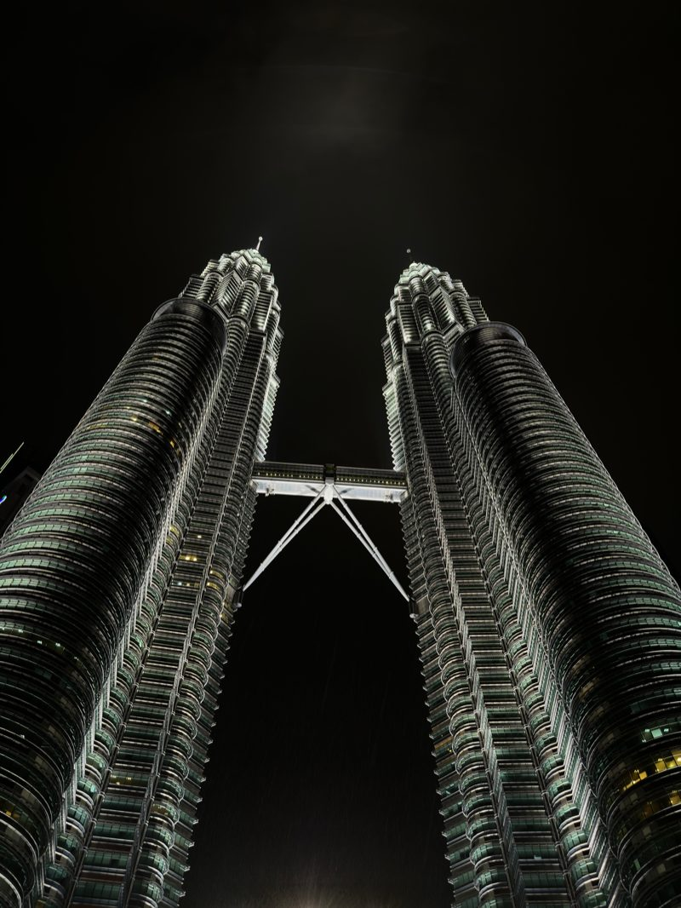
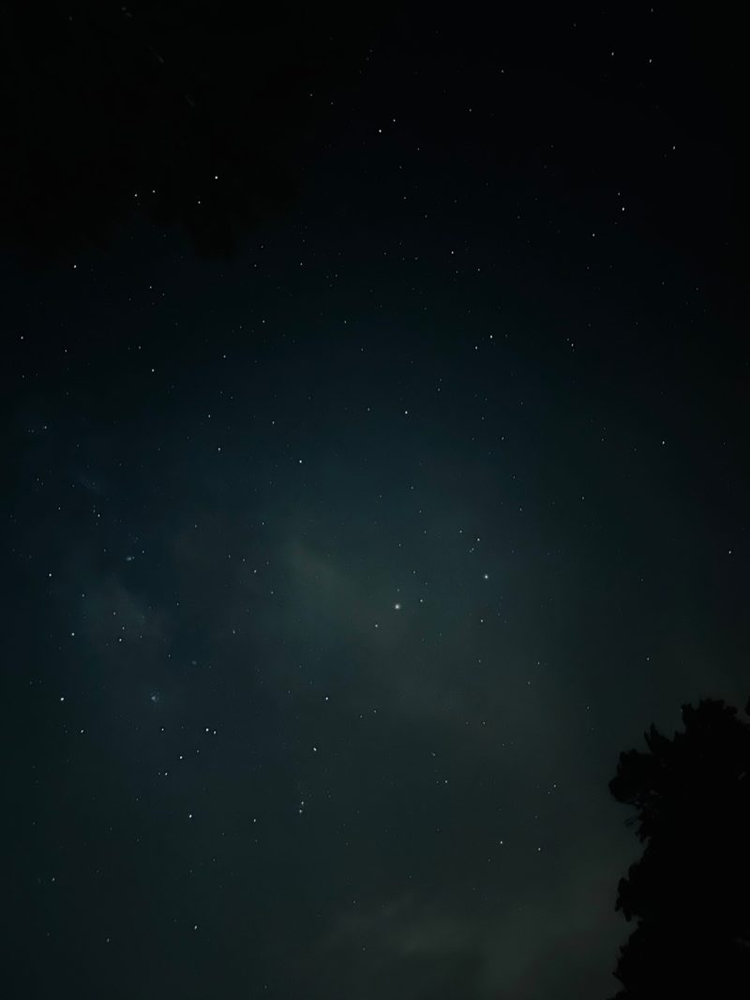

GeoTour
A travel search engine that understands “quiet mountain ruins” instead of matching keywords: BERT embeddings over 1,155 UNESCO World Heritage sites.
- Python
- Flask
- sentence-transformers
- NetworkX
Welcome, you found me. Come closer and see what’s inside.
Frontend developer · CS @ UiTM Shah Alam · Open to internships
I build for the web by hand: no framework, no build step, and every line one I can explain. When I’m not coding, I’m behind a camera, waiting for the light to be right.
Selected work
Things I built and can still explain line by line. Two of them you can open right now; the third is source you can read.

A travel search engine that understands “quiet mountain ruins” instead of matching keywords: BERT embeddings over 1,155 UNESCO World Heritage sites.

Six pages, 103 KB gzipped, zero dependencies: hand-written HTML, CSS and JavaScript, down to a contour terrain drawn with marching squares.

A dependency-free reinterpretation of an Awwwards-winning studio site, with a hand-written fbm fragment shader and a Lenis-style inertia scroller.
2023
The year I started building client websites, at JustSimple Sdn. Bhd.
1,155
UNESCO World Heritage sites GeoTour ranks by meaning instead of keywords.
1,390
Lines of vanilla JS behind the contour terrain at the top of this page.
0
npm packages, bundlers or frameworks on this site.
Computer science student at UiTM Shah Alam and a frontend developer. I spent 2023-2024 building client websites at JustSimple Sdn. Bhd., and I write interfaces by hand: this whole site is ~10,000 lines of vanilla HTML, CSS and JavaScript with no framework. Photographer when the light is right.
Nothing is published yet. These two are the ones I'm drafting first, because the code they describe already exists.
Planned
The background of this site is not an image and not a library. It's two value-noise fields cross-faded to make terrain breathe, traced into nine contour lines every frame with marching squares, with the cursor added as a Gaussian hill so the rings bulge around your pointer.
Planned
My final-year project ranks 1,155 UNESCO World Heritage sites by meaning instead of keywords. Notes on sentence embeddings, on why the category ontology mattered more than the model, and on spreading activation as a way to walk a graph of concepts.
Open to internships and freelance, in Malaysia or remote. Shah Alam, Selangor.
Nothing matches that.